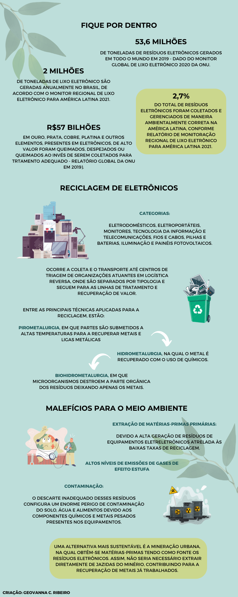

Eletrônicos

Também chamado de Resíduos de Equipamentos Eletroeletrônicos (ou REEE), são rejeitos resultantes de equipamentos que demandam energia para o seu funcionamento e que, quando descartados, contam com uma bateria ou um plug. Por serem feitos com alta tecnologia, esses resíduos podem conter substâncias tóxicas e metais pesados, como o chumbo, mercúrio, cromo e cádmio por exemplo, capazes de contaminar o solo, a água e os alimentos - impactando tanto o ambiente quanto a saúde humana.
Por outro lado, os REEE possuem materiais de valor em sua composição, como ouro, cobre, prata, platina e outros metais preciosos, que são recuperáveis por meio da reciclagem, o que significa o resgate de bilhões de dólares em matérias-primas minerais.
O lixo eletrônico é separado em oito categorias: eletrodomésticos (fogão, geladeira), eletroportáteis (ventilador, liquidificador), monitores, tecnologia da informação e telecomunicações (celulares, computadores), fios e cabos, pilhas e baterias, iluminação e painéis fotovoltaicos.
Cartilha Informativa
